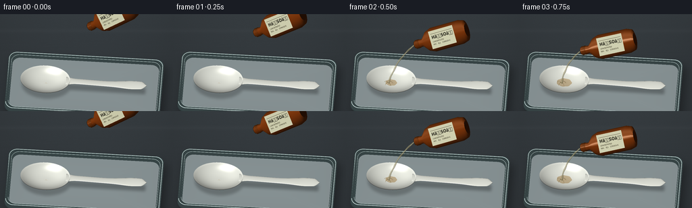

CODING AGENTS AS PIXEL WORLD MODELS
traex/GPT-6.1-Sol · material_0041
点击播放 · 原生 RGB 像素
逐轮保存的候选
回放视频、检查图与代码变化。
每份候选均可单独播放。实际图片检查记录在下方工具轨迹中。
候选 01播放与检查图
点击播放 · 原生 RGB 像素
展开代码变化
--- 上一保存版本
+++ 本次保存版本
@@ -0,0 +1,427 @@
+"""Procedural macro timelapse. All geometry, textures and motion are mathematical."""
+from pathlib import Path
+import json
+import numpy as np
+from PIL import Image, ImageDraw, ImageFilter, ImageFont
+from scipy.ndimage import gaussian_filter
+import artifact_io
+
+ROOT=Path(__file__).resolve().parent
+SPEC=json.loads((ROOT/'task_spec.json').read_text())
+W,H=SPEC['width'],SPEC['height']
+SS=3
+WW,HH=W*SS,H*SS
+RNG=np.random.default_rng(741)
+CAM=np.array([.7,-5.0,7.5])
+TARGET=np.array([.35,0.,.7])
+FORWARD=(TARGET-CAM); FORWARD/=np.linalg.norm(FORWARD)
+RIGHT=np.cross(FORWARD,[0.,0.,1.]); RIGHT/=np.linalg.norm(RIGHT)
+UP=np.cross(RIGHT,FORWARD)
+SCALE=49.*SS
+LIGHT=np.array([-3.,-4.,7.]); LIGHT/=np.linalg.norm(LIGHT)
+VIEW=-FORWARD
+
+
+def project(p):
+ p=np.asarray(p)-TARGET
+ return np.stack([WW*.50+(p@RIGHT)*SCALE,HH*.60-(p@UP)*SCALE,p@FORWARD],axis=-1)
+
+def smooth(x):
+ x=np.clip(x,0,1)
+ return x*x*(3-2*x)
+
+def noise(x,y,z=0.):
+ return (np.sin(x*22.7+y*14.3+z)*np.sin(y*27.3-x*6.8-z*.7)*.48
+ +np.sin(x*65.4+y*52.8+1.7)*.23+np.sin(x*121.7-y*91.4+2.1)*.14)
+
+def material(c,rough=.35,shine=.22,alpha=1.,emission=0.):
+ return {'c':np.array(c),'rough':rough,'shine':shine,'alpha':alpha,'emission':emission}
+
+PLASTIC=material([.9,.9,.84],.23,.6)
+GLASS=material([.38,.51,.51],.11,1.3, .8)
+
+class Renderer:
+ def __init__(self,bg):
+ self.img=bg.copy()
+ self.depth=np.full((HH,WW),1e5,dtype=np.float32)
+ def mesh(self,points,faces,mat,normals=None,colors=None,alpha=None,depthwrite=True):
+ points=np.asarray(points,dtype=np.float64)
+ faces=np.asarray(faces,dtype=np.int32)
+ if len(faces)==0:return
+ if normals is None:
+ normals=np.zeros_like(points)
+ fn=np.cross(points[faces[:,1]]-points[faces[:,0]],points[faces[:,2]]-points[faces[:,0]])
+ for j in range(3):np.add.at(normals,faces[:,j],fn)
+ normals/=np.maximum(1e-9,np.linalg.norm(normals,axis=1))[:,None]
+ if colors is None:colors=np.broadcast_to(mat['c'],points.shape)
+ nl=np.maximum(0,normals@LIGHT)
+ half=(LIGHT+VIEW); half/=np.linalg.norm(half)
+ nh=np.maximum(0,normals@half)
+ # Broad reflected laboratory softbox and a narrow wet highlight.
+ spec=nh**max(9.,3./(mat['rough']**2))*mat['shine']
+ broad=(np.maximum(0,normals@np.array([-.22,-.15,.964]))**18)*.12*mat['shine']
+ illum=.38+.62*nl
+ rgb=colors*illum[:,None]+(spec+broad)[:,None]*np.array([1.,.97,.90])[None,:]+mat['emission']
+ rgb=np.clip(rgb,0,1)
+ screen=project(points)
+ op=np.broadcast_to(mat['alpha'] if alpha is None else alpha,(len(points),))
+ for f in faces:
+ tri=screen[f]
+ minx=max(0,int(np.floor(tri[:,0].min()))); maxx=min(WW-1,int(np.ceil(tri[:,0].max())))
+ miny=max(0,int(np.floor(tri[:,1].min()))); maxy=min(HH-1,int(np.ceil(tri[:,1].max())))
+ if minx>maxx or miny>maxy:continue
+ a,b,c=tri
+ den=(b[1]-c[1])*(a[0]-c[0])+(c[0]-b[0])*(a[1]-c[1])
+ if abs(den)<1e-7:continue
+ yy,xx=np.mgrid[miny:maxy+1,minx:maxx+1]
+ xx=xx+.5;yy=yy+.5
+ u=((b[1]-c[1])*(xx-c[0])+(c[0]-b[0])*(yy-c[1]))/den
+ v=((c[1]-a[1])*(xx-c[0])+(a[0]-c[0])*(yy-c[1]))/den
+ w=1-u-v
+ zz=u*a[2]+v*b[2]+w*c[2]
+ subz=self.depth[miny:maxy+1,minx:maxx+1]
+ mask=(u>=-1e-5)&(v>=-1e-5)&(w>=-1e-5)&(zz<subz+1e-6)
+ if not np.any(mask):continue
+ cc=u[...,None]*rgb[f[0]]+v[...,None]*rgb[f[1]]+w[...,None]*rgb[f[2]]
+ aa=u*op[f[0]]+v*op[f[1]]+w*op[f[2]]
+ sub=self.img[miny:maxy+1,minx:maxx+1]
+ sub[mask]=sub[mask]*(1-aa[mask,None])+cc[mask]*aa[mask,None]
+ if depthwrite:subz[mask]=zz[mask]
+
+
+def grid_faces(n,m,wrap=False):
+ f=[]
+ for i in range(n-1):
+ for j in range(m if wrap else m-1):
+ k=(j+1)%m;a=i*m+j;b=i*m+k;c=(i+1)*m+j;d=(i+1)*m+k
+ f.extend([[a,c,b],[b,c,d]])
+ return np.array(f,dtype=int)
+
+
+def tube(points,radii,mat,renderer,sides=16,colors=None):
+ p=np.array(points); radii=np.broadcast_to(radii,(len(p),))
+ tangent=np.gradient(p,axis=0);tangent/=np.linalg.norm(tangent,axis=1)[:,None]
+ axis=np.cross(tangent,np.array([0,1,0.]));axis/=np.maximum(1e-8,np.linalg.norm(axis,axis=1))[:,None]
+ second=np.cross(tangent,axis)
+ th=np.arange(sides)*2*np.pi/sides
+ normal=axis[:,None,:]*np.cos(th)[None,:,None]+second[:,None,:]*np.sin(th)[None,:,None]
+ verts=p[:,None,:]+normal*radii[:,None,None]
+ renderer.mesh(verts.reshape(-1,3),grid_faces(len(p),sides,True),mat,normals=normal.reshape(-1,3),colors=colors)
+
+
+def ellipsoid(center,rad,mat,renderer,res=12):
+ phi=np.linspace(.0001,np.pi-.0001,8)
+ theta=np.arange(res)*2*np.pi/res
+ u=np.array([np.sin(phi)[:,None]*np.cos(theta)[None,:],np.sin(phi)[:,None]*np.sin(theta)[None,:],np.cos(phi)[:,None]*np.ones((1,res))]).transpose(1,2,0)
+ p=u*np.array(rad)+np.array(center)
+ normals=u/np.array(rad);normals/=np.linalg.norm(normals,axis=-1)[...,None]
+ renderer.mesh(p.reshape(-1,3),grid_faces(8,res,True),mat,normals=normals.reshape(-1,3))
+
+
+def damage(x,y,prog):
+ r=np.sqrt(((x+.90)/.75)**2+(y/.51)**2)
+ # A contact-centered front spreads out, not a whole-object colour change.
+ d=smooth((prog*1.63-r+.07+noise(x,y)*.14)/.46)
+ # Wet, thermally weakened neck; the far grip stays recognisably ivory.
+ hd=smooth((prog*1.8-(x+.62))/.45)*smooth((x+.18)/.25)*.92
+ return np.maximum(d,hd*(np.abs(y)<.22))
+
+
+def damaged_color(x,y,d):
+ white=np.stack([.89+0*x,.9+0*x,.86+0*x],axis=-1)
+ tan=np.array([.65,.39,.12]);brown=np.array([.18,.065,.025]);char=np.array([.029,.028,.024])
+ a=smooth(d/.38)[...,None];b=smooth((d-.28)/.42)[...,None];c=smooth((d-.60)/.33)[...,None]
+ col=white*(1-a)+tan*a
+ col=col*(1-b)+brown*b
+ col=col*(1-c)+char*c
+ grain=noise(x*1.7,y*1.7)
+ # Small, irregular glossy carbon islands and porous fissures.
+ col*=1+(grain*.18)[...,None]*d[...,None]
+ col+=((np.maximum(0,grain-.12)*.045)*d)[...,None]
+ return np.clip(col,0,1)
+
+
+def bowl_xyz(r,th,prog,underside=False):
+ x0=-.9+.75*r*np.cos(th);y0=.51*r*np.sin(th)
+ d=damage(x0,y0,prog)
+ shrink=1-.055*d
+ x=-.9+.75*r*np.cos(th)*shrink
+ y=.51*r*np.sin(th)*shrink
+ crinkle=noise(x0*1.25,y0*1.25)
+ z=.047+.193*r**2.7
+ z+=d*(.010*crinkle+.045*r**3*(np.sin(th*7.0+1)+.6*np.sin(th*13.0))+.063*r**4)
+ z+=d*.012*np.maximum(0,np.sin(x0*54)*np.sin(y0*51))
+ if underside:z-=.023
+ return np.stack([x,y,z],axis=-1),d
+
+
+def spoon(renderer,prog):
+ nr,nt=39,112
+ rs=np.linspace(.002,1,nr)[:,None]*np.ones((1,nt))
+ th=np.ones((nr,1))*np.linspace(0,2*np.pi,nt,endpoint=False)[None,:]
+ p,d=bowl_xyz(rs,th,prog)
+ col=damaged_color(p[...,0],p[...,1],d)
+ # The raised rolled rim is brightest on the undamaged plastic.
+ rim=smooth((rs-.90)/.09)*(1-d)
+ col=np.clip(col+rim[...,None]*.045,0,1)
+ mat=material([1,1,1],.18,.47)
+ # underside first; the fine plastic thickness is visible along its silhouette
+ bottom,_=bowl_xyz(rs,th,prog,True)
+ renderer.mesh(bottom.reshape(-1,3),grid_faces(nr,nt,True)[:,::-1],mat,colors=col.reshape(-1,3)*.68)
+ edge=np.concatenate([bottom[-1:],p[-1:]],axis=0)
+ edgecol=np.concatenate([col[-1:]*.67,col[-1:]],axis=0)
+ renderer.mesh(edge.reshape(-1,3),grid_faces(2,nt,True),mat,colors=edgecol.reshape(-1,3))
+ renderer.mesh(p.reshape(-1,3),grid_faces(nr,nt,True),mat,colors=col.reshape(-1,3))
+ # Sculpted narrow handle: oval cross-section with subtly flared rounded grip.
+ nx,ns=92,20
+ xs=np.linspace(-.27,2.17,nx)
+ theta=np.arange(ns)*2*np.pi/ns
+ width=.098+.058*np.exp(-((xs-1.77)/.47)**2)+.045*np.exp(-((xs+.25)/.16)**2)
+ end=smooth((2.17-xs)/.17)
+ width*=np.sqrt(np.maximum(.0002,end))
+ x=np.repeat(xs[:,None],ns,axis=1)
+ y=width[:,None]*np.sin(theta)
+ dd=damage(x,y,prog)
+ z=.207-.038*smooth((x+.1)/1.2)+.014*smooth((x-1.5)/.6)
+ z=z+.018*np.cos(theta)[None,:]
+ z+=dd*(.026*np.sin(x*9.5)+.009*np.sin(theta[None,:]*4+x*22))
+ y+=dd*.018*np.sin(x*17)
+ pp=np.stack([x,y,z],axis=-1)
+ cc=damaged_color(x,y,dd)
+ renderer.mesh(pp.reshape(-1,3),grid_faces(nx,ns,True),material([1,1,1],.24,.52),colors=cc.reshape(-1,3))
+
+
+def rounded_rect(cx,cy,hx,hy,r,n=16):
+ p=[]
+ for x,y,start in [(cx+hx-r,cy+hy-r,0),(cx-hx+r,cy+hy-r,np.pi/2),(cx-hx+r,cy-hy+r,np.pi),(cx+hx-r,cy-hy+r,3*np.pi/2)]:
+ for th in np.linspace(start,start+np.pi/2,n,endpoint=False):p.append([x+r*np.cos(th),y+r*np.sin(th)])
+ return np.array(p)
+
+
+def tray(renderer):
+ outline=rounded_rect(.28,0,2.35,1.08,.25,22)
+ n=len(outline)
+ center=np.array([[.28,0,-.038]])
+ bottom=np.column_stack([outline,np.full(n,-.038)])
+ pts=np.concatenate([center,bottom])
+ faces=np.array([[0,1+j,1+(j+1)%n] for j in range(n)])
+ colors=np.tile([.56,.61,.62],(n+1,1))
+ colors[1:]*=(.97+noise(outline[:,0],outline[:,1])*.013)[:,None]
+ renderer.mesh(pts,faces,material([.6,.65,.65],.29,.21),colors=colors,normals=np.tile([0,0,1.],(n+1,1)))
+ # Thick low glass walls, cold edge tint and paired specular rims.
+ contours=[]
+ for hx,hy,z in [(2.35,1.08,-.07),(2.35,1.08,.085),(2.29,1.02,.11),(2.25,.98,.066),(2.22,.95,-.031)]:
+ xy=rounded_rect(.28,0,hx,hy,.24,22);contours.append(np.column_stack([xy,np.full(n,z)]))
+ pts=np.concatenate(contours)
+ renderer.mesh(pts,grid_faces(5,n,True),material([.45,.58,.59],.12,.84, .93))
+ for hx,hy,z,r in [(2.32,1.05,.10,.012),(2.25,.98,.078,.006)]:
+ xy=rounded_rect(.28,0,hx,hy,.24,22);p=np.column_stack([xy,np.full(n,z)])
+ p=np.concatenate([p,p[:1]])
+ tube(p,r,material([.77,.86,.85],.11,.65),renderer,8)
+
+
+def make_bg():
+ yy,xx=np.mgrid[0:HH,0:WW]
+ q=(xx-WW*.5)/WW
+ grad=.20+.025*(1-yy/HH)-.06*q*q
+ fine=RNG.normal(0,.003,(HH,WW))
+ img=np.stack([grad*.85,grad*.95,grad*1.02],axis=-1)+fine[...,None]
+ # Out-of-focus distant bench seams and micro-scratches.
+ img+=np.exp(-((yy-HH*.17)/9)**2)[...,None]*.010
+ for j in range(75):
+ sx=RNG.uniform(0,WW);sy=RNG.uniform(HH*.25,HH);length=RNG.uniform(10,80)
+ streak=np.exp(-((yy-sy)/.8)**2-((xx-sx)/length)**4)
+ img+=streak[...,None]*RNG.uniform(-.008,.005)
+ # Grounding shadows projected onto the bench.
+ shadow=Image.new('L',(WW,HH));draw=ImageDraw.Draw(shadow)
+ rim=rounded_rect(.28,0,2.36,1.1,.25,20)
+ pp=project(np.column_stack([rim,np.full(len(rim),-.12)]))
+ draw.polygon([tuple(v[:2]+[5*SS,3*SS]) for v in pp],fill=135)
+ shadow=np.asarray(shadow.filter(ImageFilter.GaussianBlur(6*SS)))/255
+ img*=1-shadow[...,None]*.60
+ return np.clip(img,0,1)
+
+
+def spoon_shadow(renderer,prog):
+ mask=Image.new('L',(WW,HH));dr=ImageDraw.Draw(mask)
+ th=np.linspace(0,2*np.pi,110)
+ pp=project(np.column_stack([-.90+.74*np.cos(th),.51*np.sin(th),np.full(len(th),-.028)]))
+ dr.polygon([tuple(x[:2]+[1.6*SS,1.3*SS]) for x in pp],fill=120)
+ pts=project(np.array([[-.25,0,-.02],[2.1,0,-.02]]))
+ dr.line([tuple(a[:2]+[1.5*SS,2.2*SS]) for a in pts],fill=145,width=int(.20*SCALE))
+ blur=np.asarray(mask.filter(ImageFilter.GaussianBlur(2*SS)))/255
+ renderer.img*=1-blur[...,None]*.5
+
+
+def pool(renderer,prog,amount):
+ nr,nt=15,72
+ rmax=.16+.57*amount
+ r=np.linspace(.001,rmax,nr)[:,None]*np.ones((1,nt))
+ th=np.ones((nr,1))*np.linspace(0,2*np.pi,nt,endpoint=False)[None,:]
+ r*=1+.035*np.sin(th*7+1.7)
+ p,d=bowl_xyz(r,th,prog)
+ p[...,2]+=.006+.006*(1-r/rmax)
+ amber=np.array([.57,.38,.105]);black=np.array([.045,.028,.015])
+ col=amber[None,None,:]*(1-d[...,None])+black[None,None,:]*d[...,None]
+ renderer.mesh(p.reshape(-1,3),grid_faces(nr,nt,True),material([1,1,1],.11,.85,.43),colors=col.reshape(-1,3))
+
+# Timelapse bubbles have stable locations and deterministic life cycles.
+BUB=[]
+for j in range(57):
+ ang=RNG.uniform(0,2*np.pi);rr=np.sqrt(RNG.uniform(0,.8**2))
+ BUB.append((rr,ang,RNG.uniform(.022,.062),RNG.uniform(0,1),RNG.uniform(.75,1.5)))
+
+
+def bubbles(renderer,prog,frame):
+ if prog<.055:return
+ for rr,theta,size,phase,speed in BUB:
+ p,d=bowl_xyz(np.array(rr),np.array(theta),prog)
+ if d<.13:continue
+ life=(frame*.185*speed+phase)%1
+ rad=size*np.sin(np.pi*life)**.8*smooth(d*3)
+ if rad<.009:continue
+ base=damaged_color(np.array(p[0]),np.array(p[1]),np.array(d))*.85
+ base=base*.50+np.array([.20,.12,.038])*.50*(1-d*.83)
+ ellipsoid(p+[0,0,.004],[rad,rad,rad*.61],material(base,.105,.80),renderer,10)
+
+
+def bottle(renderer,frame):
+ # An amber reagent bottle enters from outside the upper-right of the shot.
+ if frame>=15:return None
+ if frame<3:
+ settle=1-smooth(frame/3)
+ elif frame>11:
+ settle=smooth((frame-11)/4)
+ else:settle=0
+ lip=np.array([-.40,.24,1.39])+np.array([.80,.15,1.1])*settle
+ direction=np.array([.965,.08,.34+.42*settle]);direction/=np.linalg.norm(direction)
+ # Neck, curved shoulder, long reagent body; base is held out of frame.
+ stations=np.array([0,.035,.06,.26,.31,.43,.61,1.52,1.68,1.72])
+ radii=np.array([.105,.13,.13,.116,.17,.30,.37,.37,.32,.20])
+ p=lip[None,:]+stations[:,None]*direction[None,:]
+ ns=56
+ tangent=np.broadcast_to(direction,(len(p),3))
+ ax=np.cross(direction,[0,1,0]);ax/=np.linalg.norm(ax)
+ ay=np.cross(direction,ax)
+ th=np.arange(ns)*2*np.pi/ns
+ normal=ax[None,None,:]*np.cos(th)[None,:,None]+ay[None,None,:]*np.sin(th)[None,:,None]
+ verts=p[:,None,:]+normal*radii[:,None,None]
+ col=np.tile([.27,.105,.026],(len(p),ns,1))
+ col+=np.maximum(0,normal@LIGHT)[...,None]*np.array([.17,.075,.010])
+ # Translucent golden edge / dark central thickness of amber glass.
+ fres=1-np.abs(normal@VIEW)
+ col+=fres[...,None]*np.array([.12,.062,.013])
+ renderer.mesh(verts.reshape(-1,3),grid_faces(len(p),ns,True),material([1,1,1],.115,.94),normals=np.broadcast_to(normal,verts.shape).reshape(-1,3),colors=col.reshape(-1,3))
+ # Recessed open mouth: dark centre, thick circular glass lip.
+ center=lip-direction*.006
+ v=np.concatenate([center[None,:],center[None,:]+radii[0]*(ax[None,:]*np.cos(th)[:,None]+ay[None,:]*np.sin(th)[:,None])])
+ renderer.mesh(v,np.array([[0,j+1,(j+1)%ns+1] for j in range(ns)]),material([.055,.033,.014],.2,.1),normals=np.tile(-direction,(ns+1,1)))
+ # Circular threaded neck gives the object the appearance of a reagent bottle.
+ for along in [.045,.082,.118,.15]:
+ circ=lip+direction*along+.131*(ax[None,:]*np.cos(th)[:,None]+ay[None,:]*np.sin(th)[:,None])
+ tube(np.concatenate([circ,circ[:1]]),.007,material([.38,.18,.043],.10,.8),renderer,6)
+ # Cream laboratory label, a flat rectangular patch on the camera-facing side.
+ side=VIEW-direction*np.dot(VIEW,direction);side/=np.linalg.norm(side)
+ across=np.cross(direction,side);across/=np.linalg.norm(across)
+ cc=lip+direction*1.035+side*.376
+ corners=np.array([cc-direction*.40-across*.275,cc+direction*.40-across*.275,cc+direction*.40+across*.275,cc-direction*.40+across*.275])
+ renderer.mesh(corners,[[0,1,2],[0,2,3]],material([.79,.79,.66],.7,.03),normals=np.tile(side,(4,1)))
+ # Text is projected as an affine decal, not a screen-fixed caption.
+ text=Image.new('RGBA',(360,205),(0,0,0,0));dt=ImageDraw.Draw(text)
+ try:
+ font=ImageFont.truetype('/usr/share/fonts/truetype/dejavu/DejaVuSans-Bold.ttf',51)
+ small=ImageFont.truetype('/usr/share/fonts/truetype/dejavu/DejaVuSans.ttf',20)
+ except OSError:font=small=ImageFont.load_default()
+ dt.line((22,35,338,35),fill=(65,57,40,230),width=3)
+ dt.text((29,45),'HâSOâ',font=font,fill=(35,34,26,255))
+ dt.text((29,115),'CONCENTRATED',font=small,fill=(50,45,31,255))
+ dt.text((29,146),'98% ⢠CORROSIVE',font=small,fill=(50,45,31,255))
+ pts=project(corners)[:,:2]
+ # Pixel u runs along the bottle's long axis, v across its face.
+ origin=pts[0];eu=(pts[1]-pts[0])/360;ev=(pts[3]-pts[0])/205
+ basis=np.column_stack([eu,ev]);inv=np.linalg.inv(basis)
+ aff=(inv[0,0],inv[0,1],-inv[0]@origin,inv[1,0],inv[1,1],-inv[1]@origin)
+ warped=text.transform((WW,HH),Image.Transform.AFFINE,aff,resample=Image.Resampling.BICUBIC)
+ arr=np.asarray(warped)/255.;alpha=arr[...,3:4]
+ renderer.img=renderer.img*(1-alpha)+arr[...,:3]*alpha
+ return lip-direction*.038
+
+
+def pour(renderer,frame,lip):
+ active=2<=frame<=11 and lip is not None
+ if active:
+ steps=np.linspace(0,1,44)
+ hit=np.array([-.98,-.045,.071])
+ path=lip[None,:]*(1-steps[:,None])+hit[None,:]*steps[:,None]
+ path[:,0]-=.085*np.sin(steps*np.pi)
+ path[:,2]+=.11*np.sin(steps*np.pi)
+ path[:,0]+=.012*np.sin(steps*18+frame*.9)*steps
+ rad=.024+.004*np.sin(steps*25-frame*1.1)
+ tube(path,rad,material([.66,.62,.45],.09,1.25,.59),renderer,14)
+ # A fine coherent white reflected edge on the clear viscous stream.
+ line=path+np.array([-.006,-.022,.002])
+ tube(line,np.full(len(path),.0045),material([.95,.94,.79],.09,.3,.73),renderer,6)
+ # Very small contact splashes, not a violent explosion.
+ for j in range(5):
+ th=j*2*np.pi/5+frame*.11
+ s=np.linspace(0,1,13)
+ p=hit+np.column_stack([.14*s*np.cos(th),.10*s*np.sin(th),.09*np.sin(s*np.pi)])
+ tube(p,.005,material([.56,.45,.22],.13,.75,.55),renderer,5)
+ if frame in [12,13] and lip is not None:
+ for j in range(2):
+ f=((frame-12)*.55+j*.3)%1
+ p=lip*(1-f)+np.array([-.98,-.045,.085])*f
+ ellipsoid(p,[.022,.022,.042],material([.62,.58,.38],.10,1.,.7),renderer,12)
+
+
+def vapor(img,frame,prog):
+ if frame<5:return img
+ yy,xx=np.mgrid[0:HH,0:WW]
+ density=np.zeros((HH,WW))
+ # Advected little Gaussian smoke parcels merge into thin, irregular wisps.
+ for j in range(24):
+ birth=4+j*.47
+ age=(frame-birth)*.25
+ if age<0 or age>2.3:continue
+ theta=j*2.399
+ p=np.array([-.92+.17*np.sin(theta),.05+.14*np.cos(theta),.15])
+ p[0]-=.10*age+.06*np.sin(age*2.3+j)
+ p[1]+=.03*age
+ p[2]+=.56*age
+ sp=project(p)
+ sx=(.040+.038*age)*SCALE
+ sy=(.075+.09*age)*SCALE
+ u=(xx-sp[0])/sx;v=(yy-sp[1])/sy
+ cloud=np.exp(-.5*(u*u+v*v))
+ wav=.70+.30*np.sin(xx/(2.1*SS)+yy/(4.3*SS)+j*.8)
+ density+=cloud*wav*.046*np.sin(np.pi*min(age/2.3,1))*(.5+.5*prog)
+ density=gaussian_filter(density,.7*SS)
+ density=np.clip(density,0,.23)[...,None]
+ return img*(1-density)+np.array([.67,.69,.68])[None,None,:]*density
+
+
+def generate():
+ bg=make_bg()
+ frames=[]
+ for i in range(SPEC['frames']):
+ prog=np.clip((i-3)/15,0,1)
+ renderer=Renderer(bg)
+ tray(renderer)
+ spoon_shadow(renderer,prog)
+ spoon(renderer,prog)
+ if i>=2:pool(renderer,prog,min(1,(i-1)/8))
+ bubbles(renderer,prog,i)
+ lip=bottle(renderer,i)
+ pour(renderer,i,lip)
+ img=vapor(renderer.img,i,prog)
+ # Gentle photographic contrast, cool bench / warm reagent colour balance.
+ img=np.clip(img,0,1)
+ img=img**.94
+ pil=Image.fromarray(np.uint8(np.clip(img*255,0,255)))
+ pil=pil.resize((W,H),Image.Resampling.LANCZOS)
+ frames.append(np.asarray(pil.convert('RGB')))
+ print(f'frame {i+1}/{SPEC["frames"]}',flush=True)
+ artifact_io.save(np.stack(frames),ROOT)
+ print('Saved RGB video artifacts.',flush=True)
+
+if __name__=='__main__':generate()
候选 02播放与检查图
点击播放 · 原生 RGB 像素


展开代码变化
--- 上一保存版本
+++ 本次保存版本
@@ -333,9 +333,9 @@
small=ImageFont.truetype('/usr/share/fonts/truetype/dejavu/DejaVuSans.ttf',20)
except OSError:font=small=ImageFont.load_default()
dt.line((22,35,338,35),fill=(65,57,40,230),width=3)
- dt.text((29,45),'HâSOâ',font=font,fill=(35,34,26,255))
+ dt.text((29,45),'H\u2082SO\u2084',font=font,fill=(35,34,26,255))
dt.text((29,115),'CONCENTRATED',font=small,fill=(50,45,31,255))
- dt.text((29,146),'98% ⢠CORROSIVE',font=small,fill=(50,45,31,255))
+ dt.text((29,146),'98% \u2022 CORROSIVE',font=small,fill=(50,45,31,255))
pts=project(corners)[:,:2]
# Pixel u runs along the bottle's long axis, v across its face.
origin=pts[0];eu=(pts[1]-pts[0])/360;ev=(pts[3]-pts[0])/205
候选 03播放与检查图
可观测工具轨迹
实际执行的命令与返回图片。
命令 1exit 0
/bin/bash -lc 'ls -la && cat prompt.txt && cat GENERATION_RULES.md && cat task_spec.json'
命令 2exit 0
/bin/bash -lc "cat artifact_io.py && python - <<'PY' import importlib.util for n in ['numpy','PIL','scipy']: print(n, bool(importlib.util.find_spec(n))) PY"
命令 3exit 0
/bin/bash -lc "cat > generate.py <<'PY'
\"\"\"Procedural macro timelapse. All geometry, textures and motion are mathematical.\"\"\"
from pathlib import Path
import json
import numpy as np
from PIL import Image, ImageDraw, ImageFilter, ImageFont
from scipy.ndimage import gaussian_filter
import artifact_io
ROOT=Path(__file__).resolve().parent
SPEC=json.loads((ROOT/'task_spec.json').read_text())
W,H=SPEC['width'],SPEC['height']
SS=3
WW,HH=W*SS,H*SS
RNG=np.random.default_rng(741)
CAM=np.array([.7,-5.0,7.5])
TARGET=np.array([.35,0.,.7])
FORWARD=(TARGET-CAM); FORWARD/=np.linalg.norm(FORWARD)
RIGHT=np.cross(FORWARD,[0.,0.,1.]); RIGHT/=np.linalg.norm(RIGHT)
UP=np.cross(RIGHT,FORWARD)
SCALE=49.*SS
LIGHT=np.array([-3.,-4.,7.]); LIGHT/=np.linalg.norm(LIGHT)
VIEW=-FORWARD
def project(p):
p=np.asarray(p)-TARGET
return np.stack([WW*.50+(p@RIGHT)*SCALE,HH*.60-(p@UP)*SCALE,p@FORWARD],axis=-1)
def smooth(x):
x=np.clip(x,0,1)
return x*x*(3-2*x)
def noise(x,y,z=0.):
return (np.sin(x*22.7+y*14.3+z)*np.sin(y*27.3-x*6.8-z*.7)*.48
+np.sin(x*65.4+y*52.8+1.7)*.23+np.sin(x*121.7-y*91.4+2.1)*.14)
def material(c,rough=.35,shine=.22,alpha=1.,emission=0.):
return {'c':np.array(c),'rough':rough,'shine':shine,'alpha':alpha,'emission':emission}
PLASTIC=material([.9,.9,.84],.23,.6)
GLASS=material([.38,.51,.51],.11,1.3, .8)
class Renderer:
def __init__(self,bg):
self.img=bg.copy()
self.depth=np.full((HH,WW),1e5,dtype=np.float32)
def mesh(self,points,faces,mat,normals=None,colors=None,alpha=None,depthwrite=True):
points=np.asarray(points,dtype=np.float64)
faces=np.asarray(faces,dtype=np.int32)
if len(faces)==0:return
if normals is None:
normals=np.zeros_like(points)
fn=np.cross(points[faces[:,1]]-points[faces[:,0]],points[faces[:,2]]-points[faces[:,0]])
for j in range(3):np.add.at(normals,faces[:,j],fn)
normals/=np.maximum(1e-9,np.linalg.norm(normals,axis=1))[:,None]
if colors is None:colors=np.broadcast_to(mat['c'],points.shape)
nl=np.maximum(0,normals@LIGHT)
half=(LIGHT+VIEW); half/=np.linalg.norm(half)
nh=np.maximum(0,normals@half)
# Broad reflected laboratory softbox and a narrow wet highlight.
spec=nh**max(9.,3./(mat['rough']**2))*mat['shine']
broad=(np.maximum(0,normals@np.array([-.22,-.15,.964]))**18)*.12*mat['shine']
illum=.38+.62*nl
rgb=colors*illum[:,None]+(spec+broad)[:,None]*np.array([1.,.97,.90])[None,:]+mat['emission']
rgb=np.clip(rgb,0,1)
screen=project(points)
op=np.broadcast_to(mat['alpha'] if alpha is None else alpha,(len(points),))
for f in faces:
tri=screen[f]
minx=max(0,int(np.floor(tri[:,0].min()))); maxx=min(WW-1,int(np.ceil(tri[:,0].max())))
miny=max(0,int(np.floor(tri[:,1].min()))); maxy=min(HH-1,int(np.ceil(tri[:,1].max())))
if minx>maxx or miny>maxy:continue
a,b,c=tri
den=(b[1]-c[1])*(a[0]-c[0])+(c[0]-b[0])*(a[1]-c[1])
if abs(den)<1e-7:continue
yy,xx=np.mgrid[miny:maxy+1,minx:maxx+1]
xx=xx+.5;yy=yy+.5
u=((b[1]-c[1])*(xx-c[0])+(c[0]-b[0])*(yy-c[1]))/den
v=((c[1]-a[1])*(xx-c[0])+(a[0]-c[0])*(yy-c[1]))/den
w=1-u-v
zz=u*a[2]+v*b[2]+w*c[2]
subz=self.depth[miny:maxy+1,minx:maxx+1]
mask=(u>=-1e-5)&(v>=-1e-5)&(w>=-1e-5)&(zz<subz+1e-6)
if not np.any(mask):continue
cc=u[...,None]*rgb[f[0]]+v[...,None]*rgb[f[1]]+w[...,None]*rgb[f[2]]
aa=u*op[f[0]]+v*op[f[1]]+w*op[f[2]]
sub=self.img[miny:maxy+1,minx:maxx+1]
sub[mask]=sub[mask]*(1-aa[mask,None])+cc[mask]*aa[mask,None]
if depthwrite:subz[mask]=zz[mask]
def grid_faces(n,m,wrap=False):
f=[]
for i in range(n-1):
for j in range(m if wrap else m-1):
k=(j+1)%m;a=i*m+j;b=i*m+k;c=(i+1)*m+j;d=(i+1)*m+k
f.extend([[a,c,b],[b,c,d]])
return np.array(f,dtype=int)
def tube(points,radii,mat,renderer,sides=16,colors=None):
p=np.array(points); radii=np.broadcast_to(radii,(len(p),))
tangent=np.gradient(p,axis=0);tangent/=np.linalg.norm(tangent,axis=1)[:,None]
axis=np.cross(tangent,np.array([0,1,0.]));axis/=np.maximum(1e-8,np.linalg.norm(axis,axis=1))[:,None]
second=np.cross(tangent,axis)
th=np.arange(sides)*2*np.pi/sides
normal=axis[:,None,:]*np.cos(th)[None,:,None]+second[:,None,:]*np.sin(th)[None,:,None]
verts=p[:,None,:]+normal*radii[:,None,None]
renderer.mesh(verts.reshape(-1,3),grid_faces(len(p),sides,True),mat,normals=normal.reshape(-1,3),colors=colors)
def ellipsoid(center,rad,mat,renderer,res=12):
phi=np.linspace(.0001,np.pi-.0001,8)
theta=np.arange(res)*2*np.pi/res
u=np.array([np.sin(phi)[:,None]*np.cos(theta)[None,:],np.sin(phi)[:,None]*np.sin(theta)[None,:],np.cos(phi)[:,None]*np.ones((1,res))]).transpose(1,2,0)
p=u*np.array(rad)+np.array(center)
normals=u/np.array(rad);normals/=np.linalg.norm(normals,axis=-1)[...,None]
renderer.mesh(p.reshape(-1,3),grid_faces(8,res,True),mat,normals=normals.reshape(-1,3))
def damage(x,y,prog):
r=np.sqrt(((x+.90)/.75)**2+(y/.51)**2)
# A contact-centered front spreads out, not a whole-object colour change.
d=smooth((prog*1.63-r+.07+noise(x,y)*.14)/.46)
# Wet, thermally weakened neck; the far grip stays recognisably ivory.
hd=smooth((prog*1.8-(x+.62))/.45)*smooth((x+.18)/.25)*.92
return np.maximum(d,hd*(np.abs(y)<.22))
def damaged_color(x,y,d):
white=np.stack([.89+0*x,.9+0*x,.86+0*x],axis=-1)
tan=np.array([.65,.39,.12]);brown=np.array([.18,.065,.025]);char=np.array([.029,.028,.024])
a=smooth(d/.38)[...,None];b=smooth((d-.28)/.42)[...,None];c=smooth((d-.60)/.33)[...,None]
col=white*(1-a)+tan*a
col=col*(1-b)+brown*b
col=col*(1-c)+char*c
grain=noise(x*1.7,y*1.7)
# Small, irregular glossy carbon islands and porous fissures.
col*=1+(grain*.18)[...,None]*d[...,None]
col+=((np.maximum(0,grain-.12)*.045)*d)[...,None]
return np.clip(col,0,1)
def bowl_xyz(r,th,prog,underside=False):
x0=-.9+.75*r*np.cos(th);y0=.51*r*np.sin(th)
d=damage(x0,y0,prog)
shrink=1-.055*d
x=-.9+.75*r*np.cos(th)*shrink
y=.51*r*np.sin(th)*shrink
crinkle=noise(x0*1.25,y0*1.25)
z=.047+.193*r**2.7
z+=d*(.010*crinkle+.045*r**3*(np.sin(th*7.0+1)+.6*np.sin(th*13.0))+.063*r**4)
z+=d*.012*np.maximum(0,np.sin(x0*54)*np.sin(y0*51))
if underside:z-=.023
return np.stack([x,y,z],axis=-1),d
def spoon(renderer,prog):
nr,nt=39,112
rs=np.linspace(.002,1,nr)[:,None]*np.ones((1,nt))
th=np.ones((nr,1))*np.linspace(0,2*np.pi,nt,endpoint=False)[None,:]
p,d=bowl_xyz(rs,th,prog)
col=damaged_color(p[...,0],p[...,1],d)
# The raised rolled rim is brightest on the undamaged plastic.
rim=smooth((rs-.90)/.09)*(1-d)
col=np.clip(col+rim[...,None]*.045,0,1)
mat=material([1,1,1],.18,.47)
# underside first; the fine plastic thickness is visible along its silhouette
bottom,_=bowl_xyz(rs,th,prog,True)
renderer.mesh(bottom.reshape(-1,3),grid_faces(nr,nt,True)[:,::-1],mat,colors=col.reshape(-1,3)*.68)
edge=np.concatenate([bottom[-1:],p[-1:]],axis=0)
edgecol=np.concatenate([col[-1:]*.67,col[-1:]],axis=0)
renderer.mesh(edge.reshape(-1,3),grid_faces(2,nt,True),mat,colors=edgecol.reshape(-1,3))
renderer.mesh(p.reshape(-1,3),grid_faces(nr,nt,True),mat,colors=col.reshape(-1,3))
# Sculpted narrow handle: oval cross-section with subtly flared rounded grip.
nx,ns=92,20
xs=np.linspace(-.27,2.17,nx)
theta=np.arange(ns)*2*np.pi/ns
width=.098+.058*np.exp(-((xs-1.77)/.47)**2)+.045*np.exp(-((xs+.25)/.16)**2)
end=smooth((2.17-xs)/.17)
width*=np.sqrt(np.maximum(.0002,end))
x=np.repeat(xs[:,None],ns,axis=1)
y=width[:,None]*np.sin(theta)
dd=damage(x,y,prog)
z=.207-.038*smooth((x+.1)/1.2)+.014*smooth((x-1.5)/.6)
z=z+.018*np.cos(theta)[None,:]
z+=dd*(.026*np.sin(x*9.5)+.009*np.sin(theta[None,:]*4+x*22))
y+=dd*.018*np.sin(x*17)
pp=np.stack([x,y,z],axis=-1)
cc=damaged_color(x,y,dd)
renderer.mesh(pp.reshape(-1,3),grid_faces(nx,ns,True),material([1,1,1],.24,.52),colors=cc.reshape(-1,3))
def rounded_rect(cx,cy,hx,hy,r,n=16):
p=[]
for x,y,start in [(cx+hx-r,cy+hy-r,0),(cx-hx+r,cy+hy-r,np.pi/2),(cx-hx+r,cy-hy+r,np.pi),(cx+hx-r,cy-hy+r,3*np.pi/2)]:
for th in np.linspace(start,start+np.pi/2,n,endpoint=False):p.append([x+r*np.cos(th),y+r*np.sin(th)])
return np.array(p)
def tray(renderer):
outline=rounded_rect(.28,0,2.35,1.08,.25,22)
n=len(outline)
center=np.array([[.28,0,-.038]])
bottom=np.column_stack([outline,np.full(n,-.038)])
pts=np.concatenate([center,bottom])
faces=np.array([[0,1+j,1+(j+1)%n] for j in range(n)])
colors=np.tile([.56,.61,.62],(n+1,1))
colors[1:]*=(.97+noise(outline[:,0],outline[:,1])*.013)[:,None]
renderer.mesh(pts,faces,material([.6,.65,.65],.29,.21),colors=colors,normals=np.tile([0,0,1.],(n+1,1)))
# Thick low glass walls, cold edge tint and paired specular rims.
contours=[]
for hx,hy,z in [(2.35,1.08,-.07),(2.35,1.08,.085),(2.29,1.02,.11),(2.25,.98,.066),(2.22,.95,-.031)]:
xy=rounded_rect(.28,0,hx,hy,.24,22);contours.append(np.column_stack([xy,np.full(n,z)]))
pts=np.concatenate(contours)
renderer.mesh(pts,grid_faces(5,n,True),material([.45,.58,.59],.12,.84, .93))
for hx,hy,z,r in [(2.32,1.05,.10,.012),(2.25,.98,.078,.006)]:
xy=rounded_rect(.28,0,hx,hy,.24,22);p=np.column_stack([xy,np.full(n,z)])
p=np.concatenate([p,p[:1]])
tube(p,r,material([.77,.86,.85],.11,.65),renderer,8)
def make_bg():
yy,xx=np.mgrid[0:HH,0:WW]
q=(xx-WW*.5)/WW
grad=.20+.025*(1-yy/HH)-.06*q*q
fine=RNG.normal(0,.003,(HH,WW))
img=np.stack([grad*.85,grad*.95,grad*1.02],axis=-1)+fine[...,None]
# Out-of-focus distant bench seams and micro-scratches.
img+=np.exp(-((yy-HH*.17)/9)**2)[...,None]*.010
for j in range(75):
sx=RNG.uniform(0,WW);sy=RNG.uniform(HH*.25,HH);length=RNG.uniform(10,80)
streak=np.exp(-((yy-sy)/.8)**2-((xx-sx)/length)**4)
img+=streak[...,None]*RNG.uniform(-.008,.005)
# Grounding shadows projected onto the bench.
shadow=Image.new('L',(WW,HH));draw=ImageDraw.Draw(shadow)
rim=rounded_rect(.28,0,2.36,1.1,.25,20)
pp=project(np.column_stack([rim,np.full(len(rim),-.12)]))
draw.polygon([tuple(v[:2]+[5*SS,3*SS]) for v in pp],fill=135)
shadow=np.asarray(shadow.filter(ImageFilter.GaussianBlur(6*SS)))/255
img*=1-shadow[...,None]*.60
return np.clip(img,0,1)
def spoon_shadow(renderer,prog):
mask=Image.new('L',(WW,HH));dr=ImageDraw.Draw(mask)
th=np.linspace(0,2*np.pi,110)
pp=project(np.column_stack([-.90+.74*np.cos(th),.51*np.sin(th),np.full(len(th),-.028)]))
dr.polygon([tuple(x[:2]+[1.6*SS,1.3*SS]) for x in pp],fill=120)
pts=project(np.array([[-.25,0,-.02],[2.1,0,-.02]]))
dr.line([tuple(a[:2]+[1.5*SS,2.2*SS]) for a in pts],fill=145,width=int(.20*SCALE))
blur=np.asarray(mask.filter(ImageFilter.GaussianBlur(2*SS)))/255
renderer.img*=1-blur[...,None]*.5
def pool(renderer,prog,amount):
nr,nt=15,72
rmax=.16+.57*amount
r=np.linspace(.001,rmax,nr)[:,None]*np.ones((1,nt))
th=np.ones((nr,1))*np.linspace(0,2*np.pi,nt,endpoint=False)[None,:]
r*=1+.035*np.sin(th*7+1.7)
p,d=bowl_xyz(r,th,prog)
p[...,2]+=.006+.006*(1-r/rmax)
amber=np.array([.57,.38,.105]);black=np.array([.045,.028,.015])
col=amber[None,None,:]*(1-d[...,None])+black[None,None,:]*d[...,None]
renderer.mesh(p.reshape(-1,3),grid_faces(nr,nt,True),material([1,1,1],.11,.85,.43),colors=col.reshape(-1,3))
# Timelapse bubbles have stable locations and deterministic life cycles.
BUB=[]
for j in range(57):
ang=RNG.uniform(0,2*np.pi);rr=np.sqrt(RNG.uniform(0,.8**2))
BUB.append((rr,ang,RNG.uniform(.022,.062),RNG.uniform(0,1),RNG.uniform(.75,1.5)))
def bubbles(renderer,prog,frame):
if prog<.055:return
for rr,theta,size,phase,speed in BUB:
p,d=bowl_xyz(np.array(rr),np.array(theta),prog)
if d<.13:continue
life=(frame*.185*speed+phase)%1
rad=size*np.sin(np.pi*life)**.8*smooth(d*3)
if rad<.009:continue
base=damaged_color(np.array(p[0]),np.array(p[1]),np.array(d))*.85
base=base*.50+np.array([.20,.12,.038])*.50*(1-d*.83)
ellipsoid(p+[0,0,.004],[rad,rad,rad*.61],material(base,.105,.80),renderer,10)
def bottle(renderer,frame):
# An amber reagent bottle enters from outside the upper-right of the shot.
if frame>=15:return None
if frame<3:
settle=1-smooth(frame/3)
elif frame>11:
settle=smooth((frame-11)/4)
else:settle=0
lip=np.array([-.40,.24,1.39])+np.array([.80,.15,1.1])*settle
direction=np.array([.965,.08,.34+.42*settle]);direction/=np.linalg.norm(direction)
# Neck, curved shoulder, long reagent body; base is held out of frame.
stations=np.array([0,.035,.06,.26,.31,.43,.61,1.52,1.68,1.72])
radii=np.array([.105,.13,.13,.116,.17,.30,.37,.37,.32,.20])
p=lip[None,:]+stations[:,None]*direction[None,:]
ns=56
tangent=np.broadcast_to(direction,(len(p),3))
ax=np.cross(direction,[0,1,0]);ax/=np.linalg.norm(ax)
ay=np.cross(direction,ax)
th=np.arange(ns)*2*np.pi/ns
normal=ax[None,None,:]*np.cos(th)[None,:,None]+ay[None,None,:]*np.sin(th)[None,:,None]
verts=p[:,None,:]+normal*radii[:,None,None]
col=np.tile([.27,.105,.026],(len(p),ns,1))
col+=np.maximum(0,normal@LIGHT)[...,None]*np.array([.17,.075,.010])
# Translucent golden edge / dark central thickness of amber glass.
fres=1-np.abs(normal@VIEW)
col+=fres[...,None]*np.array([.12,.062,.013])
renderer.mesh(verts.reshape(-1,3),grid_faces(len(p),ns,True),material([1,1,1],.115,.94),normals=np.broadcast_to(normal,verts.shape).reshape(-1,3),colors=col.reshape(-1,3))
# Recessed open mouth: dark centre, thick circular glass lip.
center=lip-direction*.006
v=np.concatenate([center[None,:],center[None,:]+radii[0]*(ax[None,:]*np.cos(th)[:,None]+ay[None,:]*np.sin(th)[:,None])])
renderer.mesh(v,np.array([[0,j+1,(j+1)%ns+1] for j in range(ns)]),material([.055,.033,.014],.2,.1),normals=np.tile(-direction,(ns+1,1)))
# Circular threaded neck gives the object the appearance of a reagent bottle.
for along in [.045,.082,.118,.15]:
circ=lip+direction*along+.131*(ax[None,:]*np.cos(th)[:,None]+ay[None,:]*np.sin(th)[:,None])
tube(np.concatenate([circ,circ[:1]]),.007,material([.38,.18,.043],.10,.8),renderer,6)
# Cream laboratory label, a flat rectangular patch on the camera-facing side.
side=VIEW-direction*np.dot(VIEW,direction);side/=np.linalg.norm(side)
across=np.cross(direction,side);across/=np.linalg.norm(across)
cc=lip+direction*1.035+side*.376
corners=np.array([cc-direction*.40-across*.275,cc+direction*.40-across*.275,cc+direction*.40+across*.275,cc-direction*.40+across*.275])
renderer.mesh(corners,[[0,1,2],[0,2,3]],material([.79,.79,.66],.7,.03),normals=np.tile(side,(4,1)))
# Text is projected as an affine decal, not a screen-fixed caption.
text=Image.new('RGBA',(360,205),(0,0,0,0));dt=ImageDraw.Draw(text)
try:
font=ImageFont.truetype('/usr/share/fonts/truetype/dejavu/DejaVuSans-Bold.ttf',51)
small=ImageFont.truetype('/usr/share/fonts/truetype/dejavu/DejaVuSans.ttf',20)
except OSError:font=small=ImageFont.load_default()
dt.line((22,35,338,35),fill=(65,57,40,230),width=3)
dt.text((29,45),'HâSOâ',font=font,fill=(35,34,26,255))
dt.text((29,115),'CONCENTRATED',font=small,fill=(50,45,31,255))
dt.text((29,146),'98% ⢠CORROSIVE',font=small,fill=(50,45,31,255))
pts=project(corners)[:,:2]
# Pixel u runs along the bottle's long axis, v across its face.
origin=pts[0];eu=(pts[1]-pts[0])/360;ev=(pts[3]-pts[0])/205
basis=np.column_stack([eu,ev]);inv=np.linalg.inv(basis)
aff=(inv[0,0],inv[0,1],-inv[0]@origin,inv[1,0],inv[1,1],-inv[1]@origin)
warped=text.transform((WW,HH),Image.Transform.AFFINE,aff,resample=Image.Resampling.BICUBIC)
arr=np.asarray(warped)/255.;alpha=arr[...,3:4]
renderer.img=renderer.img*(1-alpha)+arr[...,:3]*alpha
return lip-direction*.038
def pour(renderer,frame,lip):
active=2<=frame<=11 and lip is not None
if active:
steps=np.linspace(0,1,44)
hit=np.array([-.98,-.045,.071])
path=lip[None,:]*(1-steps[:,None])+hit[None,:]*steps[:,None]
path[:,0]-=.085*np.sin(steps*np.pi)
path[:,2]+=.11*np.sin(steps*np.pi)
path[:,0]+=.012*np.sin(steps*18+frame*.9)*steps
rad=.024+.004*np.sin(steps*25-frame*1.1)
tube(path,rad,material([.66,.62,.45],.09,1.25,.59),renderer,14)
# A fine coherent white reflected edge on the clear viscous stream.
line=path+np.array([-.006,-.022,.002])
tube(line,np.full(len(path),.0045),material([.95,.94,.79],.09,.3,.73),renderer,6)
# Very small contact splashes, not a violent explosion.
for j in range(5):
th=j*2*np.pi/5+frame*.11
s=np.linspace(0,1,13)
p=hit+np.column_stack([.14*s*np.cos(th),.10*s*np.sin(th),.09*np.sin(s*np.pi)])
tube(p,.005,material([.56,.45,.22],.13,.75,.55),renderer,5)
if frame in [12,13] and lip is not None:
for j in range(2):
f=((frame-12)*.55+j*.3)%1
p=lip*(1-f)+np.array([-.98,-.045,.085])*f
ellipsoid(p,[.022,.022,.042],material([.62,.58,.38],.10,1.,.7),renderer,12)
def vapor(img,frame,prog):
if frame<5:return img
yy,xx=np.mgrid[0:HH,0:WW]
density=np.zeros((HH,WW))
# Advected little Gaussian smoke parcels merge into thin, irregular wisps.
for j in range(24):
birth=4+j*.47
age=(frame-birth)*.25
if age<0 or age>2.3:continue
theta=j*2.399
p=np.array([-.92+.17*np.sin(theta),.05+.14*np.cos(theta),.15])
p[0]-=.10*age+.06*np.sin(age*2.3+j)
p[1]+=.03*age
p[2]+=.56*age
sp=project(p)
sx=(.040+.038*age)*SCALE
sy=(.075+.09*age)*SCALE
u=(xx-sp[0])/sx;v=(yy-sp[1])/sy
cloud=np.exp(-.5*(u*u+v*v))
wav=.70+.30*np.sin(xx/(2.1*SS)+yy/(4.3*SS)+j*.8)
density+=cloud*wav*.046*np.sin(np.pi*min(age/2.3,1))*(.5+.5*prog)
density=gaussian_filter(density,.7*SS)
density=np.clip(density,0,.23)[...,None]
return img*(1-density)+np.array([.67,.69,.68])[None,None,:]*density
def generate():
bg=make_bg()
frames=[]
for i in range(SPEC['frames']):
prog=np.clip((i-3)/15,0,1)
renderer=Renderer(bg)
tray(renderer)
spoon_shadow(renderer,prog)
spoon(renderer,prog)
if i>=2:pool(renderer,prog,min(1,(i-1)/8))
bubbles(renderer,prog,i)
lip=bottle(renderer,i)
pour(renderer,i,lip)
img=vapor(renderer.img,i,prog)
# Gentle photographic contrast, cool bench / warm reagent colour balance.
img=np.clip(img,0,1)
img=img**.94
pil=Image.fromarray(np.uint8(np.clip(img*255,0,255)))
pil=pil.resize((W,H),Image.Resampling.LANCZOS)
frames.append(np.asarray(pil.convert('RGB')))
print(f'frame {i+1}/{SPEC[\"frames\"]}',flush=True)
artifact_io.save(np.stack(frames),ROOT)
print('Saved RGB video artifacts.',flush=True)
if __name__=='__main__':generate()
PY
python generate.py"命令 4exit 0
/bin/bash -lc "python - <<'PY'
import numpy as np
from PIL import Image
from pathlib import Path
p=np.load('pixels.npz')['pixels']
print('Saved tensor:',p.shape,p.dtype)
for i in [0,7,12,19]:
a=np.array(Image.open(f'frames/{i:02}.png'))
print(i,'shape:',a.shape,'range:',(a.min(),a.max()),'mean:',a.mean().round(1))
print('Frame count:',len(list(Path('frames').glob('*.png'))))
print('Player exists:',Path('index.html').exists())
print('Artifacts:', [(p.name,p.stat().st_size) for p in [Path('pixels.npz'),Path('inspection.png'),Path('transition_check.png'),Path('index.html')]])
PY
grep -n 'dt.text' generate.py"命令 5exit 0
/bin/bash -lc "python - <<'PY'
p='generate.py'
s=open(p).read().splitlines()
for i,line in enumerate(s):
if 'dt.text((29,45)' in line:s[i]=\" dt.text((29,45),'H\\\\u2082SO\\\\u2084',font=font,fill=(35,34,26,255))\"
if 'dt.text((29,146)' in line:s[i]=\" dt.text((29,146),'98% \\\\u2022 CORROSIVE',font=small,fill=(50,45,31,255))\"
open(p,'w').write('\\n'.join(s)+'\\n')
PY"命令 6exit 0
/bin/bash -lc "python - <<'PY' p='generate.py' s=open(p).read() s=s.replace(\"'Hâ\\x82\\x82SOâ\\x82\\x84'\", \"'H\\\\u2082SO\\\\u2084'\") s=s.replace(\"'98% â\\x80¢ CORROSIVE'\", \"'98% \\\\u2022 CORROSIVE'\") open(p,'w').write(s) PY grep -n 'dt.text' generate.py python generate.py"
命令 7exit 0
/bin/bash -lc "command -v ffmpeg || true; grep -n 'dt.text' generate.py; python -m py_compile generate.py"
命令 8exit 0
/bin/bash -lc 'python generate.py'
保存候选 3 份；完成命令 8 次；可验证图片返回 0 张。原始 API 响应与完整日志保留在本地。